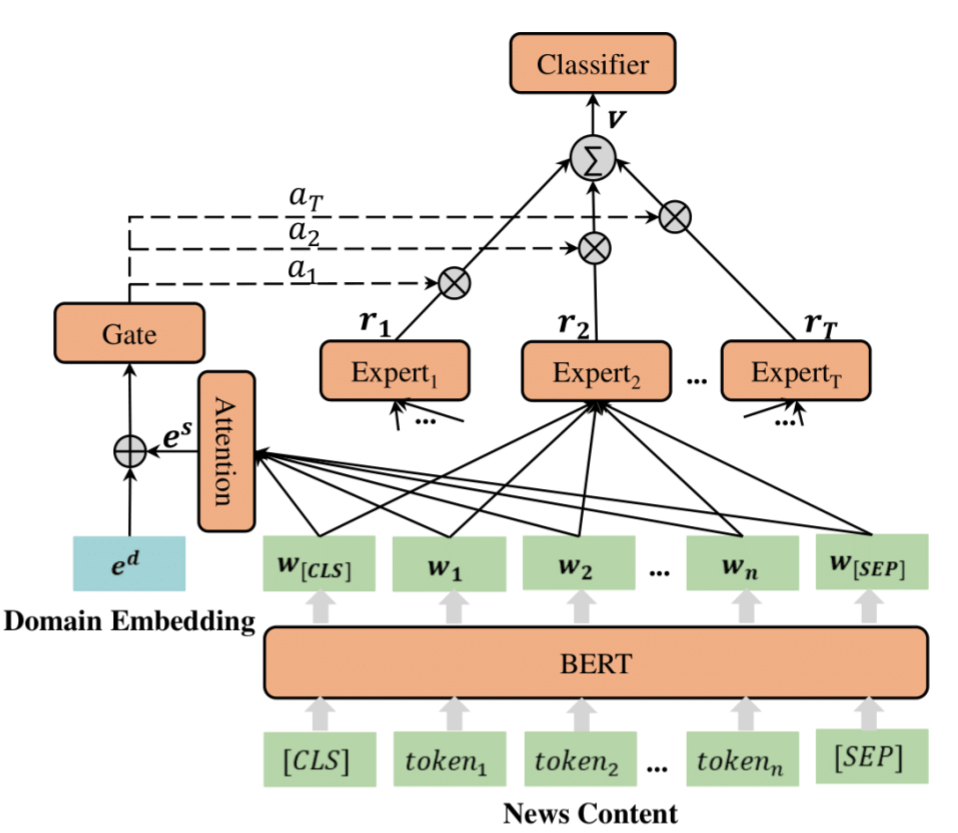

MDFEND
Introduction
Title: MDFEND: Multi-domain Fake News Detection
Authors: Qiong Nan, Juan Cao, Yongchun Zhu, Yanyan Wang, Jintao Li
Abstract: Fake news spread widely on social media in various domains, which lead to real-world threats in many aspects like politics, disasters, and finance. Most existing approaches focus on single-domain fake news detection (SFND), which leads to unsatisfying performance when these methods are applied to multi-domain fake news detection. As an emerging field, multi-domain fake news detection (MFND) is increasingly attracting attention. However, data distributions, such as word frequency and propagation patterns, vary from domain to domain, namely domain shift. Facing the challenge of serious domain shift, existing fake news detection techniques perform poorly for multi-domain scenarios. Therefore, it is demanding to design a specialized model for MFND. In this paper, we first design a benchmark of fake news dataset for MFDN with domain label annotated, namely Weibo21, which consists of 4,488 fake news and 4,640 real news from 9 different domains. We further propose an effective Multi-domain Fake News Detection Model (MDFEND) by utilizing domain gate to aggregate multiple representations extracted by a mixture of experts. The experiments show that MDFEND can significantly improve the performance of multi-domain fake news detection. Our dataset and code are available at https://github.com/kennqiang/MDFEND-Weibo21.
Running with Faknow
Model Hyper-Parameters:
bert (str): bert model name, default ="hfl/chinese-roberta-wwm-ext"max_len (int): max length of input text, default =170domain_num (int): number of domains, default =9batch_size (int): batch size, default =64num_epochs (int): number of epochs, default =50lr (float): learning rate, default =0.0005weight_decay (float): weight decay, default =5e-5step_size (int): step size of learning rate scheduler, default =100gamma (float): gamma of learning rate scheduler, default =0.98metrics (List): evaluation metrics, if None, [‘accuracy’, ‘precision’, ‘recall’, ‘f1’] is used, default =Nonedevice (str): device to run model, default ='cpu'
A Running Example:
Write the following code to a python file, such as run.py
from faknow.run.content_based import run_mdfend
run_mdfend(train_path=, validate_path=, test_path=)
And then:
python run.py
If you want to change parameters, dataset or evaluation settings, take a look at